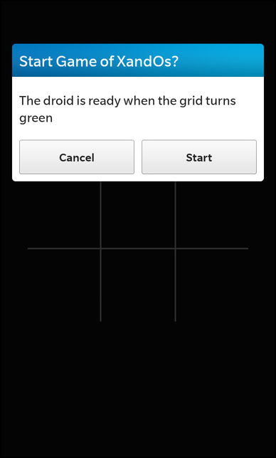
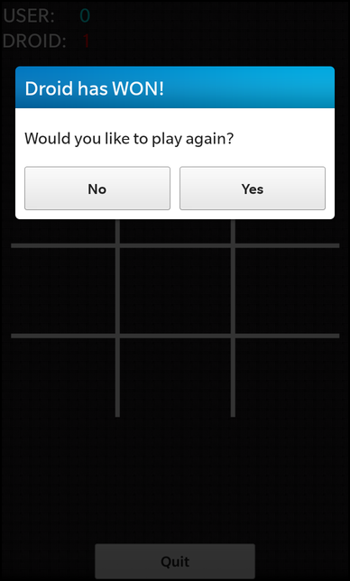

XandOs Example
Files:
- xandos/precompiled.h
- xandos/assets/main.qml
- xandos/src/applicationui.cpp
- xandos/src/applicationui.hpp
- xandos/src/droidlistener.cpp
- xandos/src/droidlistener.hpp
- xandos/src/xandos.cpp
- xandos/src/xandos.hpp
- xandos/src/main.cpp
- xandos/xandos.pro
- xandos/translations/xandos.pro
Description
The XandOs example demonstrates how to launch a headless service counterpart and communicate with it.




Overview
In this sample, we represent the game board using an image and sprites for the game pieces.
UI
The UI of this sample application consists of some labels that display the user/droid winning scores, followed by an image for the game grid.
The business logic of the application is encapsulated in the xandos component which is exposed as "_xandos" to the UI.
// global variable holding the user winning game count property int userScore: 0 // global variable holding the droid winning game count property int droidScore: 0 // global variable for enabling/disabling game interaction property bool gameEnabled: false property int leftpadding: 50 property int rightpadding: 50
The following global variables are used to store the winning game scores for each player, these counters get incremented every time a won() signal is received per player. In addition a gameEnabled variable is used to enable or disable the game pending if a droid connection is made. This is to prevent the user player from going out of sync with the droid.
Container { topPadding: 120 verticalAlignment: VerticalAlignment.Top horizontalAlignment: HorizontalAlignment.Fill // Container for displaying the user game win count Container { horizontalAlignment: HorizontalAlignment.Fill verticalAlignment: VerticalAlignment.Center layout: DockLayout { } Container { horizontalAlignment: HorizontalAlignment.Left verticalAlignment: VerticalAlignment.Center layout: StackLayout { orientation: LayoutOrientation.LeftToRight } Label { text: "USER:" textStyle.color: Color.White textStyle.fontSize: FontSize.Large } Label { id: user text: "" + userScore textStyle.color: Color.create("#40BB9E") textStyle.fontSize: FontSize.Large } } Container { horizontalAlignment: HorizontalAlignment.Right verticalAlignment: VerticalAlignment.Center layout: StackLayout { orientation: LayoutOrientation.LeftToRight } Label { id: droid text: "" + droidScore textStyle.color: Color.create("#DF6054") textStyle.fontSize: FontSize.Large } Label { text: ":DROID" textStyle.color: Color.White textStyle.fontSize: FontSize.Large } } } // Container for displaying the droid game win count }
The following containers with their associated Label's are used to display the winning scores for each player.
// Container for displaying the 3x3 game grid Container { layout: DockLayout { } topPadding: 50 horizontalAlignment: HorizontalAlignment.Center verticalAlignment: VerticalAlignment.Center ImageView { visible: !gameEnabled imageSource: "asset:///images/grid.png" } // the green grid is used when the droid is ready to play ImageView { visible: gameEnabled imageSource: "asset:///images/grid_start.png" } }
These ImageView 's are used to display the game grid. The default grid is used in between game starts when the players are not ready yet. The other grid, which is distinct from the default one only by color, is used to indicate that the droid player has been connected and is ready to play.
// Container representing the first row of grid choices Container { horizontalAlignment: HorizontalAlignment.Left verticalAlignment: VerticalAlignment.Center leftPadding: 51 topPadding: 55 Container { layout: StackLayout { orientation: LayoutOrientation.LeftToRight } ImageView { id: i0 objectName: "0" maxWidth: 140 maxHeight: 140 visible: gameEnabled imageSource: "asset:///images/blank.png" scalingMethod: ScalingMethod.None onTouch: { // conditions to make sure that a selection can only be made // by the user in grid cells that have not already been selected if (event.isDown() && imageSource.toString().search("blank") != -1) { imageSource = "asset:///images/x.png" _xandos.select(0, 1) } } } ImageView { id: i1 objectName: "1" visible: gameEnabled leftMargin: 75 maxWidth: 140 maxHeight: 140 imageSource: "asset:///images/blank.png" scalingMethod: ScalingMethod.None onTouch: { if (event.isDown() && imageSource.toString().search("blank") != -1) { imageSource = "asset:///images/x.png" _xandos.select(1, 1) } } } ImageView { id: i2 objectName: "2" visible: gameEnabled leftMargin: 72 maxWidth: 140 maxHeight: 140 imageSource: "asset:///images/blank.png" scalingMethod: ScalingMethod.None onTouch: { if (event.isDown() && imageSource.toString().search("blank") != -1) { imageSource = "asset:///images/x.png" _xandos.select(2, 1) } } } } // Container representing the second row of grid choices Container { topPadding: 60 layout: StackLayout { orientation: LayoutOrientation.LeftToRight } ImageView { id: i3 objectName: "3" visible: gameEnabled maxWidth: 140 maxHeight: 140 imageSource: "asset:///images/blank.png" scalingMethod: ScalingMethod.None onTouch: { if (event.isDown() && imageSource.toString().search("blank") != -1) { imageSource = "asset:///images/x.png" _xandos.select(3, 1) } } } ImageView { id: i4 objectName: "4" visible: gameEnabled leftMargin: 75 maxWidth: 140 maxHeight: 140 imageSource: "asset:///images/blank.png" scalingMethod: ScalingMethod.None onTouch: { if (event.isDown() && imageSource.toString().search("blank") != -1) { imageSource = "asset:///images/x.png" _xandos.select(4, 1) } } } ImageView { id: i5 objectName: "5" visible: gameEnabled leftMargin: 72 maxWidth: 140 maxHeight: 140 imageSource: "asset:///images/blank.png" scalingMethod: ScalingMethod.None onTouch: { if (event.isDown() && imageSource.toString().search("blank") != -1) { imageSource = "asset:///images/x.png" _xandos.select(5, 1) } } } } // Container representing the third row of grid choices Container { topPadding: 70 layout: StackLayout { orientation: LayoutOrientation.LeftToRight } ImageView { id: i6 objectName: "6" visible: gameEnabled maxWidth: 140 maxHeight: 140 imageSource: "asset:///images/blank.png" scalingMethod: ScalingMethod.None onTouch: { if (event.isDown() && imageSource.toString().search("blank") != -1) { imageSource = "asset:///images/x.png" _xandos.select(6, 1) } } } ImageView { id: i7 objectName: "7" visible: gameEnabled leftMargin: 75 maxWidth: 140 maxHeight: 140 imageSource: "asset:///images/blank.png" scalingMethod: ScalingMethod.None onTouch: { if (event.isDown() && imageSource.toString().search("blank") != -1) { imageSource = "asset:///images/x.png" _xandos.select(7, 1) } } } ImageView { id: i8 objectName: "8" visible: gameEnabled leftMargin: 72 maxWidth: 140 maxHeight: 140 imageSource: "asset:///images/blank.png" scalingMethod: ScalingMethod.None onTouch: { if (event.isDown() && imageSource.toString().search("blank") != -1) { imageSource = "asset:///images/x.png" _xandos.select(8, 1) } } } } }
The following Container 's with their associated images represent the grid cells, with the first Container being the first grid row, the second being the second grid row and so on. Each of the ImageView represent one cell in the grid, with the default image being a blank (meaning no selection has been made). When an onTouch event occurs, we verify first that the cell was not marked previously and we change it to the players sprite image.
// Button to exit the game at any time Button { bottomPadding: 200 bottomMargin: 200 horizontalAlignment: HorizontalAlignment.Center verticalAlignment: VerticalAlignment.Bottom text: qsTr("Quit") onClicked: { _xandos.stopDroid() Application.requestExit() } }
The "Quit" button allows the user to terminate the droid and exit the application at any time.
// System dialog that questions user if to start the game at all SystemDialog { id: dialog title: qsTr("Start Game of XandOs?") body: qsTr("The droid is ready when the grid turns green") confirmButton.label: qsTr("Start") confirmButton.enabled: true cancelButton.label: qsTr("Cancel") cancelButton.enabled: true onFinished: { var x = result; if (x == SystemUiResult.ConfirmButtonSelection) { // start droid and make the necessary signal/slot connections console.log("confirm"); _xandos.startDroid(); _xandos.won.connect(playerWon); _xandos.droidReady.connect(droidStart) } else if (x == SystemUiResult.CancelButtonSelection) { console.log("cancel"); Application.requestExit() } } },
This SystemDialog is used at the start of the application to inquire the user if he wishes to play the game, upon pressing the confirmation button we get the game ready by starting the droid and connecting the necessary signals/slots.
SystemDialog { // System dialog that represents the game result (win,loss, or tie) and // queries user if they wish to play again. id: gameResult title: qsTr("") body: qsTr("Would you like to play again?") confirmButton.label: qsTr("Yes") confirmButton.enabled: true cancelButton.label: qsTr("No") cancelButton.enabled: true onFinished: { var x = result; if (x == SystemUiResult.ConfirmButtonSelection) { // Do the necessary functions to clear/reset the game state // start a new droid and make the necessary signal/slot connections console.log("confirm"); clearGrid() _xandos.resetGame(); _xandos.startDroid(); _xandos.won.connect(playerWon); _xandos.droidReady.connect(droidStart) } else if (x == SystemUiResult.CancelButtonSelection) { console.log("cancel"); Application.requestExit() } } }
The following SystemDialog is used to inform which player has won or if the game was a tie, and to query the user if he/she wiches to continue playing. The text for this dialog is set by the playerWon() javascript function which is invoked when the won() signal is received, which indicates which player has won or if the game was a tie.
// Functions to adjust the the game result dialog based // on the ending game state function playerWon(x) { gameEnabled = false; console.log("winner is: " + x) _xandos.won.disconnect(playerWon); if(-1 == x) { droidScore += 1 gameResult.title = qsTr("Droid has WON!") } else if(1 == x) { gameResult.title = qsTr("You have WON!") userScore += 1 } else { gameResult.title = qsTr("It's a TIE!") } gameResult.show() }
This function is invoked when the won() signal is received. The function increments the winning counters based on the player that won and changes the above mantioned dialog text.
// Convenience function to reset the grid // back to pre game state. function clearGrid() { i0.imageSource = "asset:///images/blank.png" i1.imageSource = "asset:///images/blank.png" i2.imageSource = "asset:///images/blank.png" i3.imageSource = "asset:///images/blank.png" i4.imageSource = "asset:///images/blank.png" i5.imageSource = "asset:///images/blank.png" i6.imageSource = "asset:///images/blank.png" i7.imageSource = "asset:///images/blank.png" i8.imageSource = "asset:///images/blank.png" }
The clearGrid() function clears the grid before each new game.
// function to enable/disable game pending the // droid status. function droidStart() { gameEnabled = true }
The droidStart() function is invoked when a droidReady() signal is received which indicates that the droid connection has been established and the droid is ready to play.
droidlistener
The droidlistener class serves as the server socket which communicates with droid connections and facilitates data transfers.
class droidlistener: public QObject { Q_OBJECT public: droidlistener(QObject *parent = 0); virtual ~droidlistener(); /** * Method to start listening on the server socket * for new connections. */ void listen(); public Q_SLOTS: /** * This method is invoked through the signal/slot * mechanism when a new connection occurs on the server socket. */ void newConnection(); /** * This method is invoked through the signal/slot mechanism * as well, when the socket is ready to read data. */ void readyRead(); /** * This method is invoked when the socket connection disconnects. */ void disconnected(); Q_SIGNALS: /* * Signal used to inform the listening parties * of the selection made by the droid. */ void droidSelection(const QString choice); private: // The port used for the server socket int m_port; //The server socket variable QTcpServer *m_server; //The socket that is created when a connection with the client is made QTcpSocket *m_socket; };
The default constructor creates the QTcpServer socket and readies it for any client connections by connecting to the signal/slot mechanism.
droidlistener::droidlistener(QObject *parent) : QObject(parent), m_port(9876) { m_server = new QTcpServer(this); // Connect into the signal/slot mechanism to invoke this class method when a new connection // is available bool ok = connect(m_server, SIGNAL(newConnection()), this, SLOT(newConnection())); Q_ASSERT(ok); Q_UNUSED(ok); }
The listen() method initiates the server socket to start listenening for any client connections.
void droidlistener::listen() { qDebug() << "start listening for connections"; m_server->listen(QHostAddress::LocalHost, m_port); }
The newConnection() method is invoked when a connection is initiated, it grabs the new connection and readies it for data reads by connecting the related methods through the signals/slots mechanism.
void droidlistener::newConnection() { m_socket = m_server->nextPendingConnection(); if (m_socket->state() == QTcpSocket::ConnectedState) { qDebug() << "New connection established."; } // Make connections for reveiving disconnect and read ready signals for the // new connection socket bool ok = connect(m_socket, SIGNAL(disconnected()), this, SLOT(disconnected())); Q_ASSERT(ok); ok = connect(m_socket, SIGNAL(readyRead()), this, SLOT(readyRead())); Q_ASSERT(ok); Q_UNUSED(ok); }
The readyRead() method is invoked when the socket is ready to receive data transfers, it than forwards the data by emitting the droidSelection() signal with the data as it's parameter.
void droidlistener::readyRead() { QByteArray ba = m_socket->read(20); // Emit the droid selection when finished reading in the // data from the droid client socket Q_EMIT droidSelection(QString(ba)); }
The disconnected() method is invoked when the socket signals the clients disconnection and the appropriate cleanup is taken.
void droidlistener::disconnected() { qDebug() << "Connection disconnected."; disconnect(m_socket, SIGNAL(disconnected())); disconnect(m_socket, SIGNAL(readyRead())); m_socket->deleteLater(); }
xandos
This class represents the central business logic for the game mechanism. Providing functionality to keep game states in-sync with it's droid counterpart, and updating of the game matrix to represent the current game state.
class xandos: public QObject { Q_OBJECT public: xandos(bb::cascades::Application* app, QObject *parent = 0); virtual ~xandos(); public Q_SLOTS: /** * Method for inputing the user and droid * selections into the game matrix. This causes * the game matrix to be changed with the new selection. * * @param player The player thats making the selection. * @param index The grid index being selected * @param send True if the selection is to be sent to the droid, or false otherwise */ void select(int index, int player, bool send = true); /** * Reset the game back to it's prior to start of game state */ void resetGame(); /** * Start the droid for playing */ void startDroid(); /** * Terminate the droid */ void stopDroid(); /** * Method invoked by the signal/slot mechanism when * the droid has communicated it's selection to us */ void droidSelection(const QString choice); Q_SIGNALS: /** * Signal emitted when the user or droid has won or a * tie occured. * * @param player The player that has won or tied. */ void won(int player); // Signal emitted when socket receives data indicating that // the droid is ready to play void droidReady(); private: /** * Method invoked to send the user selection * to the droid, in order to keep in synce both * game matrices. */ void sendSelection(int index); /** * Convenience method to check the grid * matrix that there are no more selections available */ bool noMoreSelections(); // The grid matrix, containing all the winning possibilites static int m_possibilities[9][9]; // size of the grid matrix int m_size; // The game matrix, representing the current state of the game int m_gameMatrix[8]; // Invoke manager to start/stop the headless droid bb::system::InvokeManager *m_invokeManager; bb::cascades::Application *m_app; };
This is the game grid matrix which consists of all the winning possibilites for each cell. Each winning matrix follows the {D1,H1,H2,H3,V1,V2,V3,D2,S} layout, which represents if the cell has the possibility to win in the diagnol, horizontal, vertical or a combination of the rows. The last index (S), is a flag indicator to communicate if the matrix has been selected already or not.
// The grid matrix with all the winning possibilities // representing the wins from left to right {D1,H1,H2,H3,V1,V2,V3,D2} int xandos::m_possibilities[9][9] = { { 1, 1, 0, 0, 1, 0, 0, 0, 0 }, { 0, 1, 0, 0, 0, 1, 0, 0, 0 }, { 0, 1, 0, 0, 0, 0, 1, 1, 0 } , { 0, 0, 1, 0, 1, 0, 0, 0, 0 }, { 1, 0, 1, 0, 0, 1, 0, 1, 0 }, { 0, 0, 1, 0, 0, 0, 1, 0, 0 } , { 0, 0, 0, 1, 1, 0, 0, 1, 0 }, { 0, 0, 0, 1, 0, 1, 0, 0, 0 }, { 1, 0, 0, 1, 0, 0, 1, 0, 0 } };
The default constructor initializes it's member variables, by instantiating the invoke manager and the game matrix to start of game.
xandos::xandos(bb::cascades::Application* app, QObject *parent) : QObject(parent) , m_size(sizeof(m_possibilities) / sizeof(m_possibilities[0])) , m_gameMatrix( { 0, 0, 0, 0, 0, 0, 0, 0 }) , m_invokeManager(new bb::system::InvokeManager(this)) , m_app(app) { }
The select() method is used to mark the player selection by chosing the grid matrix at some chosen index and performing the row operation on the game matrix. The operation depends on the player, if it's the user than row addition is performed otherwise row subtraction. Each player tries to achieve a 3 or -3 value in any of the game matrix indexes in order to win the game. Once a won or tie game is determined, the won() signal is emitted. The select() method can also send the selection to the droid in order to update it's game matrix, this "send" paramter can be disabled when the user updates it's game matrix with droid selections where communication with droid is not necessary.
void xandos::select(int index, int player, bool send) { m_possibilities[index][8] = 1; for (int i = 0; i < 8; i++) { // Add the matrix at the selected index to the game matrix // multiply the matrix values based on player, if its user than // matrix row addition is used, matrix subtraction otherwise for the droid m_gameMatrix[i] += m_possibilities[index][i] * player; if (0 != m_gameMatrix[i] && m_gameMatrix[i] % 3 == 0) { // emit wining signal if any matrix value equals 3 Q_EMIT won(m_gameMatrix[i] / 3); stopDroid(); return; } } if (noMoreSelections()) { // emit tie signal if there are no more choices available // since there is only two players (1,-1) that means -2 // represents a tie Q_EMIT won(-2); stopDroid(); return; } if (send) { sendSelection(index); } }
The startDroid() method uses the InvokeManager in order to send a START event via the InvokeRequest to the headless droid to prepare it for starting the game. The stopDroid() does the oppoisite by issuing a STOP event via InvokeRequest to the droid in order to terminate it due to game over.
void xandos::startDroid() { qDebug() << "requesting to start droid"; bb::system::InvokeRequest request; request.setTarget("com.example.xandos.droid"); request.setAction("bb.action.START"); request.setMimeType("text/plain"); bb::system::InvokeTargetReply *reply = m_invokeManager->invoke(request); if(!reply) { qDebug() << "failed to start droid: " << reply->errorCode(); reply->deleteLater(); } } void xandos::stopDroid() { qDebug() << "requesting to terminate droid"; bb::system::InvokeRequest request; request.setTarget("com.example.xandos.droid"); request.setAction("bb.action.STOP"); bb::system::InvokeTargetReply *reply = m_invokeManager->invoke(request); if (!reply) { qWarning() << "failed to stop droid: " << reply->errorCode(); reply->deleteLater(); } }
The droidSelection() method is invoked when a droid selection data is received, it than proceeds to find the corresponding ImageView for the cell that was selected and to change it's image source representing the droids sprite.
void xandos::droidSelection(const QString choice) { // the first droid choice being a -1 that represents // the droid establishing communication and is in ready state to play if(-1 == choice.toInt()) { qDebug() << "emit droid ready"; Q_EMIT droidReady(); return; } // Find the droid grid choice and set it to 0 bb::cascades::ImageView * image = m_app->findChild<bb::cascades::ImageView*>(choice); if (image) { image->setImageSource(QUrl("asset:///images/o.png")); select(choice.toInt(), -1, false); } else { qDebug() << "failed to find ImageView: " << choice; } }
The sendSelection() method is tasked with sending a CHOICE event to the droid with the data representing the users grid cell choice. This is done using InvokeRequest via the InvokeManager instance.
void xandos::sendSelection(int index) { qDebug() << "sending user selection to droid"; bb::system::InvokeRequest request; request.setTarget("com.example.xandos.droid"); request.setAction("bb.action.CHOICE"); request.setMimeType("text/plain"); request.setData(QString::number(index).toUtf8()); bb::system::InvokeTargetReply *reply = m_invokeManager->invoke(request); if (!reply) { qDebug() << "failed xandos.droid invocation: " << reply->errorCode(); reply->deleteLater(); } }
noMoreSelections() is a private convenience method to check the grid matrix if there are no more selections available, which signifies a tied game if no player has reached the winning state in the game matrix by this time.
bool xandos::noMoreSelections() { for (int i = 0; i < m_size; i++) { if (0 == m_possibilities[i][8]) { return false; } } return true; }